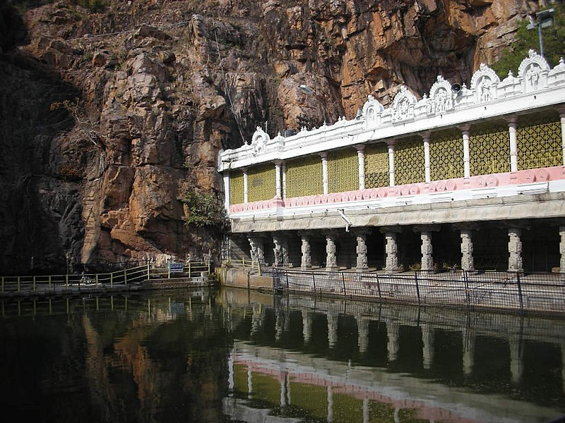

Tirupati History
-
Tirupati is a city in the Indian state of Andhra Pradesh. Its Sri Venkateswara Temple sits atop one of the the 7 peaks of Tirumala Hills, attracting scores of Hindu pilgrims. Sri Venkateswara National Park, home to the temple, also contains the Sri Venkateswara Zoological Park with lions and primates. Nearby, next to a waterfall and cave believed to be sacred, Sri Kapileswara Swamy Temple is dedicated to Lord Shiva.
-

Indian Institute of Technology Tirupati (IIT Tirupati) is an autonomous engineering and technology education institute located in Tirupati, Andhra Pradesh. Initially mentored by IIT Madras, now IIT Tirupati, the fastest growing 3rd generation IIT is located in Yerpedu, Tirupati, and has a size of 539 acres, including a proposed research park. The Foundation stone for IIT Tirupati was laid by the Union Minister Smriti Irani and the then Union Minister and former Vice President of India M.Venkaiah Naidu and the then chief minister of Andhra Pradesh N. Chandrababu Naidu.
-

Kapila Theertham is a famous Saivite Temple and Theertham, located at Tirupati in the Tirupati District of Andhra Pradesh, India. The idol is believed to be installed by Kapila Muni and hence Lord Siva here is referred to as Kapileswara. The temple stands at the entrance to a mountain cave in one of the steep and vertical faces at the foot of the Tirumala hills which are part of Seshachalam Hills, where the waters of the mountain stream fall directly into Temple Pushkarini known as "Kapila Theertham". A huge stone statue of a seated bull "Nandhi", Shiva's steed, greets devotees and passersby at the entrance to the temple.